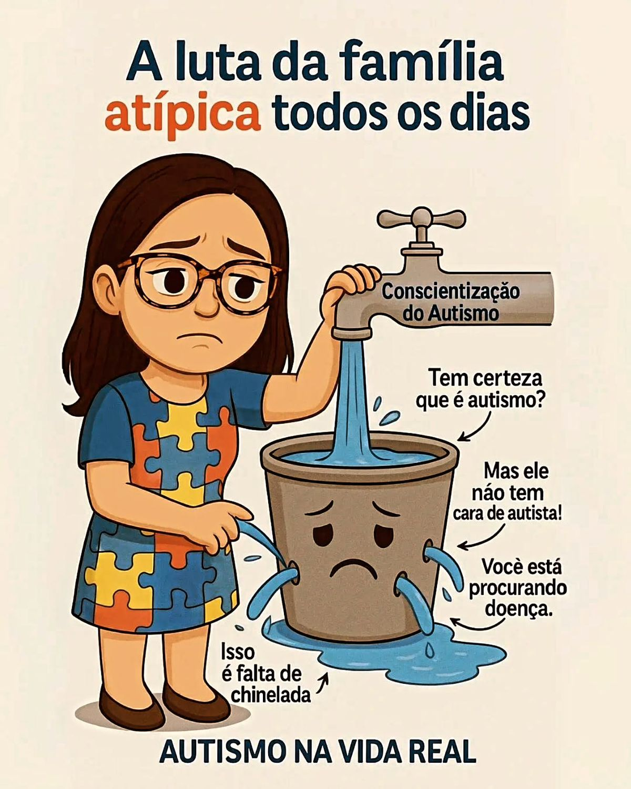

SOBRE NÓS

O projeto nasceu da união de cinco estudantes do curso Java do programa ProaProfissão — Gabriel Carneiro,Fernanda Ribeiro, Diego Armando, Fernando Vieira, Davi Ramos e Matheus de Souza. Movidos pelo desejo de aplicar a tecnologia em favor de causas de alto impacto social, identificamos uma dor profunda vivida por muitas famílias: a extrema dificuldade de encontrar, avaliar e agendar profissionais realmente qualificados e especializados no atendimento ao Transtorno do Espectro Autista (TEA).Combinando nossos aprendizados, unimos forças para projetar e codificar uma plataforma web robusta, segura e intuitiva. O site foi concebido para funcionar como uma ponte de confiança, conectando famílias e cuidadores a terapeutas, psicólogos, fonoaudiólogos e educadores especializados. Cada linha de código refletiu o compromisso do grupo em transformar o aprendizado do curso em uma solução real, promovendo inclusão, acessibilidade e apoio a quem mais precisa.


- Missão:
- Facilitar o acesso a cuidados especializados de qualidade para pessoas no espectro autista por meio da tecnologia.
- Visão:
- Ser a plataforma de referência em conexão entre famílias e profissionais de saúde/educação focados em TEA.
- Origem:
- Projeto desenvolvido por formandos do programa ProaProfissão na linguagem Java.